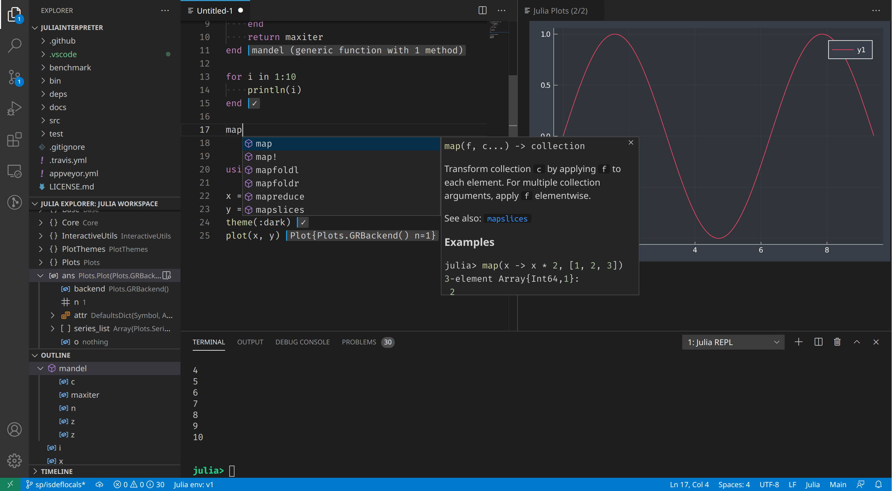

1 Introducción
1.1 ¿Por qué Julia?
Julia es otro lenguaje de programación más, orientado a cálculo científico el análisis de datos similar a Python, R o Matlab.
¿De veras necesitamos aprender otro lenguaje más?
1.2 ¿Qué pretende ser Julia?
De los creadores de Julia:
We want a language that is:
- Open source.
- With the speed of C.
- Obvious, familiar mathematical notation like Matlab.
- As usable for general programming as Python.
- As easy for statistics as R.
- As natural for string processing as Perl.
- As powerful for linear algebra as Matlab.
- As good at gluing programs together as the shell.
- Dirt simple to learn, yet keeps the most serious hackers happy.
1.3 ¿Qué es Julia?
- Julia es un lenguaje de alto nivel con una sintaxis fácil de aprender (similar a Python, R o Matlab) que permite escribir símbolos matemáticos en las expresiones (UTF-8).
- Julia es un lenguaje muy veloz (equiparable a C en muchas tareas.)
- Lenguaje dinámico (tipado dinámico y despacho múltiple).
- De propósito general, pero orientado a la computación científica y el análisis de grandes volúmenes de datos.
- Creado en 2019 en el MIT por el equipo del profesor Edelman.
- Última versión: 1.7 (bastante maduro).
- Desarrollado por una gran comunidad científica.
- Repositorio de paquetes de código abierto con más de 3000 paquetes en dominios muy diversos.
1.3.1 Comparativa de rapidez de Julia con otros lenguajes
1.4 Algunas razones más para pensárselo
- Evita el problema de la doble reescritura de código (prototipo + versión operativa).
- Permite la programación paralela y distribuida.
- Puede ejecutar código realizado en otros lenguajes como C, Fortran, Python, R, Matlab, etc.
1.5 Instalación de Julia
- Descargar e instalar Julia.
- Añadir Julia al PATH del sistema.
Una vez instalado, para ejecutar el intérprete de Julia basta con abrir una terminal y teclear julia.
prompt> julia
_
_ _ _(_)_ | Documentation: https://docs.julialang.org
(_) | (_) (_) |
_ _ _| |_ __ _ | Type "?" for help, "]?" for Pkg help.
| | | | | | |/ _` | |
| | |_| | | | (_| | | Version 1.7.3 (2022-05-06)
_/ |\__'_|_|_|\__'_| | Official https://julialang.org/ release
|__/ |
julia> 1.6 El REPL de Julia
El REPL1 de Julia permite ejecutar código de Julia tecleándolo directamente en la terminal.
julia> 2 + 3
5Tiene, además, varios modos:
;para abrir el modo shell.]para abrir el modo de gestión de paquetes.?para abrir el modoe de ayuda.to open help mode<backspace>para volver al modo normal.
1.7 El gestor de paquetes de Julia
Como en otros lenguajes, es posible crear módulos o paquetes con código que puede ser reutilizado. Julia tiene un potente gestor de paquetes que facilita la búsqueda, instalación, actualización y eliminación de paquetes.
Por defecto el gestor de paquetes utiliza el repositorio de paquetes oficial pero se pueden instalar paquetes de otros repositorios.
Para entrar en el modo de gestión de paquetes hay que teclear ]. Esto produce un cambio en el prompt del REPL de Julia.
Los comandos más habituales son:
add p: Instala el paquetepen el entorno activo de Julia.update: Actualiza los paquetes del entorno activo de Julia.status: Muestra los paquetes instalados y sus versiones en el entorno activo de Julia.remove p: Elimina el paquetepdel entorno activo de Julia.
Ejemplo
(@v1.7) pkg> add CSV
Resolving package versions...
Installed CodecZlib ────────── v0.7.0
Installed SentinelArrays ───── v1.3.13
Installed WeakRefStrings ───── v1.4.2
Installed InlineStrings ────── v1.1.4
Installed FilePathsBase ────── v0.9.18
Installed TranscodingStreams ─ v0.9.6
Installed CSV ──────────────── v0.10.4
Updating `~/.julia/environments/v1.7/Project.toml`
[336ed68f] + CSV v0.10.4
Updating `~/.julia/environments/v1.7/Manifest.toml`
[336ed68f] + CSV v0.10.4
[944b1d66] + CodecZlib v0.7.0
[48062228] + FilePathsBase v0.9.18
[842dd82b] + InlineStrings v1.1.4
[91c51154] + SentinelArrays v1.3.13
[3bb67fe8] + TranscodingStreams v0.9.6
[ea10d353] + WeakRefStrings v1.4.2
Precompiling project...1.8 Entornos de desarrollo
Cuando se trabaja en el desarrollo de varias aplicaciones, es habitual crear entornos de desarrollo individuales para instalar los paquetes de los que dependan y que no interfieran con los de otras aplicaciones.
Básicamente, un entorno de desarrollo es un directorio con código de Julia que contiene dos ficheros Project.toml y Manifest.toml que contienen los paquetes instalados en el entorno y sus dependencias.
Para crear y activar un entorno de desarrollo se utilizan los siguiente comandos en el modo de gestión de paquetes:
generate dir: Crea el directoriodiry lo convierte en un entorno de desarrollo de Julia.activate dir: Convierte en el entorno de desarrollodiren el entorno activo dentro de la sesión de Julia. A partir de entonces, cualquier paquete que se instale o actualice será dentro de ese entorno.
Ejemplo
(@v1.7) pkg> generate app
Generating project app:
app/Project.toml
app/src/app.jl
(@v1.7) pkg> activate app
Activating project at `~/app`
(app) pkg> add CSV # Instalar última versión del paquete CSV
...
(app) pkg> add DataFrames@v1.3.0; # Instalar la versión 1.3.0 del paquete DataFrames
...
(app) pkg> status
Project app v0.1.0
Status `~/app/Project.toml`
[336ed68f] CSV v0.10.4
[a93c6f00] DataFrames v1.3.01.9 IDEs para Julia

1.9.1 Visual studio code

1.9.2 Jupyter
- Descargar e instalar Python
- Descargar e instalar Jupyter
- Instalar el paquete IJulia:
julia> using Pkg
julia> Pkg.add("IJulia")
1.9.3 Pluto
Pluto es entorno de desarrollo propio de Julia similar a Jupyter. Pluto permite crear notebooks reactivos cuyas celdas se actualizan cada vez que se produce un cambio en el estado del programa.
Para usarlo basta instalar el paquete Pluto.jl.
julia> using Pkg
julia> Pkg.add("Pluto");
julia> using Pluto
julia> Pluto.run()
[ Info: Loading...
┌ Info:
└ Opening http://localhost:1234/?secret=a63iBsIL in your default browser... ~ have fun!
┌ Info:
│ Press Ctrl+C in this terminal to stop Pluto
└
Opening in existing browser session.REPL es el acrónimo de Read, Evaluate, Print and Loop.↩︎